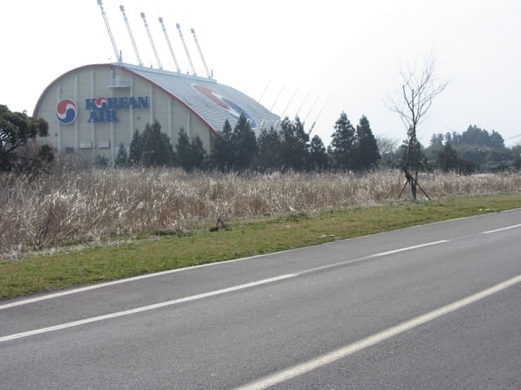
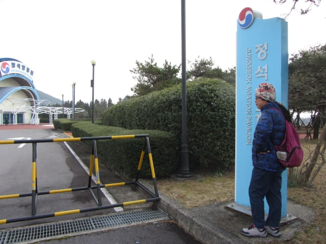
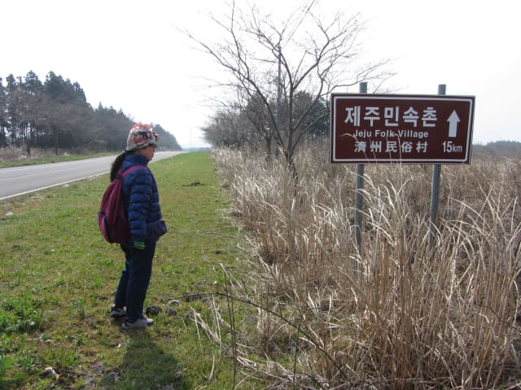
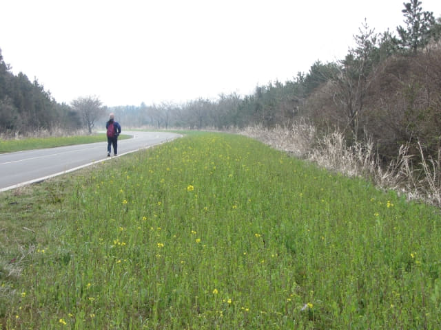
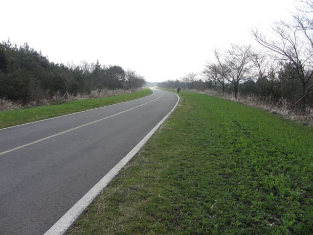

我們在早上八時二十七分在松堂里的「셰프라인 월드」巴士站下車, 沿鹿山路一直走, 走了約個半鐘, 於早上十時十分來到静石航空館 。看看地圖, 走了差不多一半的路程了!


沒有櫻花、油菜花的鹿山路
從這裡開始, 馬路兩旁都是一株株的櫻花樹。 My God! 沒有奇蹟出現, 仍然是光禿禿的, 黑漆漆的, 半粒花也沒有! 而樹下的油菜, 也是綠油油的, 只有間中幾點黃色點綴其中!
還以為鹿山路只是沒有櫻花, 真想不到竟然連油菜花也沒有, 原本的「濟州島春天最美麗道路」遠足, 最後竟變成「荒山野嶺馬路食西北風遊」! 心情頓時被打落十八層地獄, 什麼遊興也沒有!
静石航空館也休館!! 不是嗎??
唉! 欣賞櫻花和油菜花失敗, 唯有將重點轉移參觀静石航空館吧! 匆匆走過馬路, 來到静石航空館入口。
「不是嗎? 今日休館!」
「唉! 這行程簡直徹底失敗!」
連番打擊下, 難免當場爆粗啦!
冷靜過後, 唯有在静石航空館外面的公園巡巡。静石航空館的守衛十分緊張, 幾次想走出來阻止我們。出來呀! 笨! 實行「敵進我退, 敵退我進」, 今日得個吉, 在公園走走都得卦! 大佬!


離開静石航空館, 接著朝太陽匆匆繼續沿鹿山路向前走, 一心只想盡快離開這傷心地。

沿途光禿禿的櫻花樹, 這些已經是枝上最大的花蕾, 離開花還有一段頗長的日子呢! 相信要到四月中才會開始陸續開花。

繼續向前走, 高高的風車就在前面不遠處。沒有櫻花和油菜花, 唯有將目標轉移到風車, 希望有新發現。

拐個彎, 高高的風車突然間消失了! 真奇怪? 竟然不知去了那裡!

拐了兩個「S」彎後, 迎面又是一段筆直的道路。
回頭望望, 順光那邊的天空是淺藍色的。今天雖然天晴, 但天空給一層煙塵籠罩著, 並不美麗。
迎面又是另一個彎, 原來鹿山路中間一段是彎彎曲曲, 在地圖上是看不到的。
沿途的櫻花樹。風很大, 樹枝不斷擺動, 拍照非常困難, 隨便拍兩張作記錄算了。
不時回頭看看。懸想馬路兩旁粉紅色櫻花和黃澄澄油菜花怒放的時候, 肯定是美極!
加時里油菜花廣場 (Gasiri Canolla Flower Plaza)
經過加時里油菜花廣場。看看手上地圖, 沒有標示這地方的。望望四周, 一片荒野, 那裡有油菜花田?